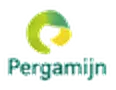

Over Zorgpunt Connect
Samen voor betere zorg
Zorgpunt Connect (ZPC) verbindt zorginstellingen en zorgprofessionals. We zorgen voor de juiste mensen op de juiste plek, zodat cliënten kunnen rekenen op kwalitatieve en betrouwbare zorg.
zorgpartners
en veiligheid
oplossingen
we het verschil
Onze partners
We werken samen met toonaangevende zorgorganisaties, waaronder:
